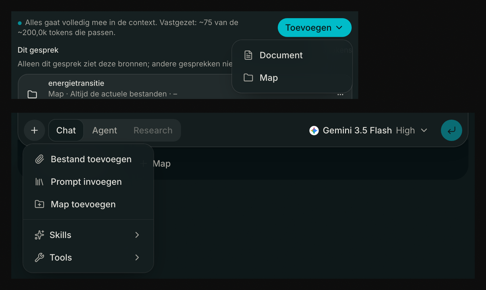
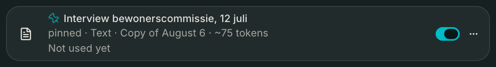
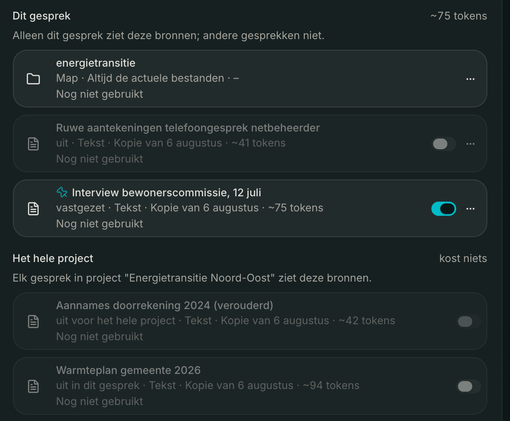
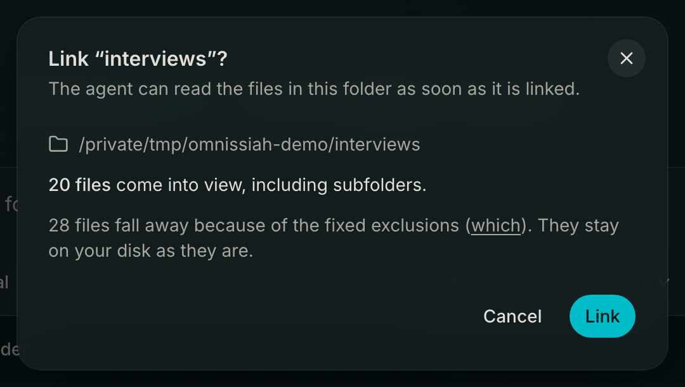

Sources
A source is everything the model can see in a conversation apart from your messages: a document you add, a folder on your disk that you link, and a file you send along as an attachment. They live in one list, behind the Sources button at the top right of a conversation. That button is an icon only.
Above that list is why it is grouped the way it is: "Everything the model can see in this conversation, grouped by how long it stays."
Three lifespans
The groups say how far a source reaches, and every heading explains itself:
- With one message. "Attached to the message you sent it with, and from then on it goes along every turn, budget included."
- This conversation. "Only this conversation sees these sources; other conversations do not."
- The whole project. "Every conversation in project X sees these sources."
An empty group does not appear.
Adding a source
From the sources panel you click Add, with two choices: Document or Folder. Under Document you then pick Text (paste or type), File ("Upload a PDF, Markdown or text file. The text is extracted and made searchable.") or URL ("Give a URL; the readable content of the page is stored.").
From the input bar the + does something else. Add file makes an attachment to that one message, and dragging onto the input bar does the same. Add folder links a folder to the conversation.

That difference counts: an attachment belongs to one message, a document to the conversation or the project. You cannot drag anything into the sources panel itself.
The first document you add takes noticeably longer than the ones after it. Omnissiah downloads a local embedding model once to make your documents searchable; see Data and backup.
What each source shows
Under the title is what it is, what happens when the source changes on the other end, and roughly what it costs.

When the source changes. A document is a snapshot: "Copy of August 5". A folder shows "Always the current files", because what is there at that moment is what gets read. An attachment shows "Stays as you sent it": it sits in your message and does not change along with the file on disk.
What it costs. An estimate, for example "~1.2k tokens". An image in your sources says "costs nothing", because it only comes into view when the model asks for it. A folder gets a dash: "A folder is not in the context; the model reads the files with tools." To the right of every group heading is the total.
When the model last saw it. "Not used yet", or "Last used on August 5". With a project source it says "in this project", because every conversation in that project may have read it.
On and off, and where that applies
Every document has a switch that decides whether it joins in once the assistant starts searching; the label is Include in search. In a conversation it touches that conversation only, and the label says so. If a source is off, one of three things is going on:
- off, in the place where the source belongs.
- off in this conversation, with a project source you switched off here. The project stays untouched and other conversations still see it.
- off for the whole project. Then the switch is locked, because you cannot turn it on from a conversation. You do that on the project page.

Folders, images and attachments have none: they are not in the searchable part, so there is nothing to switch.
Pinning
In the menu of a document is Pin: "Always goes along in full in the context, even when the rest becomes searchable." The word "pinned" then appears on the row.
Where pinning would do nothing the menu item is missing, instead of being offered greyed out. That applies to folders and to sources you inherit from a project.
Fully in context, or searched
If everything fits into the context together, it goes along whole: "Goes along in full in the conversation's context." If it does not fit, it becomes searchable: "Gets searched as soon as a question calls for it." That choice applies to your whole collection and is made again every turn, so it sits as one line above the list and not per source.
You set the limit under Settings → General → Defaults, field Sources fully in context up to (tokens), 200,000 by default. There is always a second limit of half the context window of the chosen model as well, so with a small model that one wins.
If your pinned sources together no longer fit under it, they go along in full anyway and the line warns you: "Unpin one, or raise the limit in Settings." If they do not fit in the model itself, the turn refuses up front and the message names which sources they are, instead of an incomprehensible provider error halfway through.
Attachments
You send at most five attachments per message, up to 10 MB each, and images and PDFs only.
An attachment has no switch, no pin, and you cannot rename or delete it. It sits in your message, and that is history: it does go along, every turn again. Instead of a read stamp it says which message it belongs to, with a jump to it: "With your message of August 5 at 02:03 PM".
You make it lasting with Keep in this conversation, or in a project conversation Keep in project "X". After that it is an ordinary document you can read back, search, rename and pin. Your message keeps its attachment, and precisely for that reason the text does not go along a second time: the row then says "also in your message".
If a conversation gets so long that the oldest turns are summarised, an attachment falls outside it and the row says "summarised, no longer counts". The message stays and so does the attachment, but it no longer reserves any room.
Linked folders
Before you link, you see what you link. The confirmation names how many files come into view including subfolders, how many fall away because of the fixed exclusions, and how many folders could not be read. Behind which are the five groups that stay out: dependencies and build output, caches, version control, compilation artifacts and system files. Those simply stay on your disk. You can still say no here.

There is no limit that stops you from linking a large folder. With a very large one the counting is cut short; then the numbers say "At least" and the dialog says they are a lower bound.
Your own material does stay in, including videos, recordings and archives: a folder of interviews that looks empty is worse than a longer list.
One thing is never opened: files with a dot at the start, and key files. You see that your .env is there, but the assistant does not read it of its own accord.
Expand a folder in the panel and you see exactly the same selection as the assistant, with how much is in the whole tree underneath.
A folder that has disappeared from disk does not fall away quietly. The row states the reason, for example "Not available: this folder no longer exists on this computer", with Link again in the menu. The other reasons are that the folder may not be read, that the path is no longer a folder, or that it lies outside the allowed location. The model gets that same message, so it does not answer confidently from an incomplete picture.
If something changed since the last time, it says "Files have been added, removed or renamed since then." That is exactly what is measured: about the content of a file that line makes no claim at all.
Before the model sees a source
Everything that comes in from outside your conversation is first assessed for instructions that are not yours. What gets scanned, what a flag does and does not mean and what you do about it is on Privacy and security.
If you work in a project with Answer only from the sources, stricter rules apply and the assistant refers to the source for every claim. See Projects.